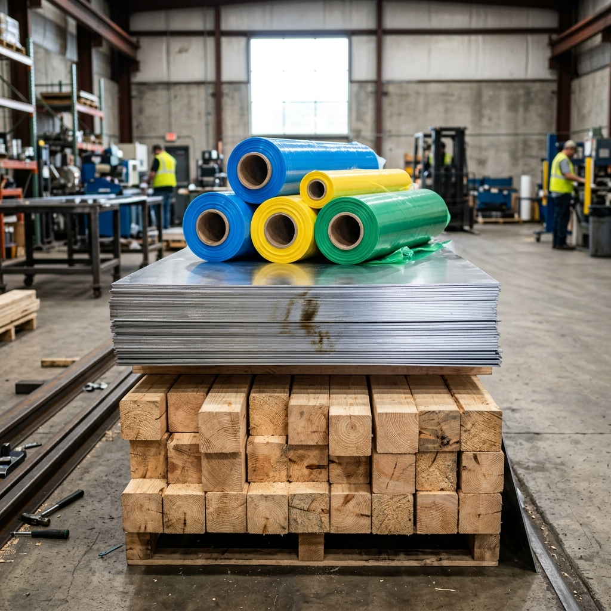
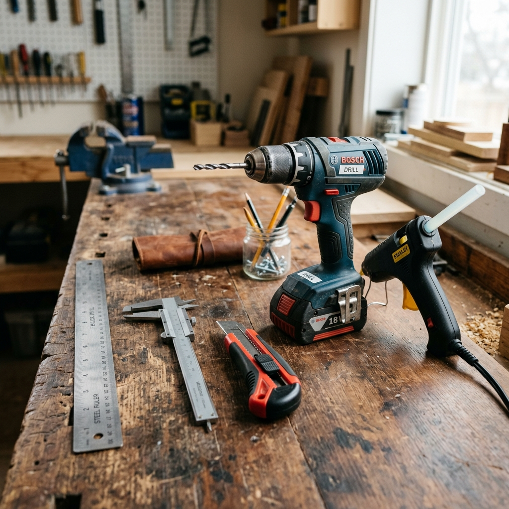
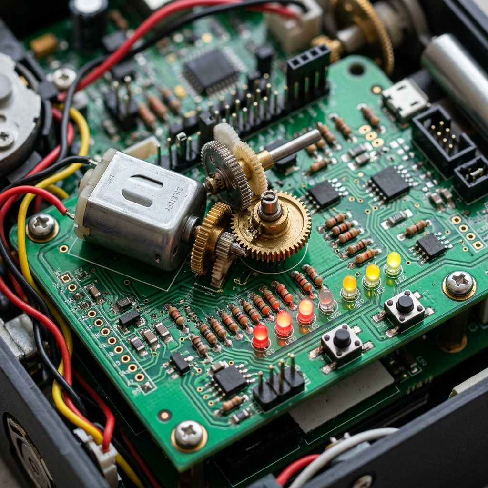

ประเภทและสมบัติของวัสดุ (Materials & Properties)
การเลือกใช้วัสดุในการสร้างชิ้นงานให้เหมาะสมและปลอดภัย จำเป็นต้องเรียนรู้ประเภทและสมบัติเฉพาะตัวของวัสดุต่าง ๆ ซึ่งในงานช่างเทคนิคพื้นฐานสามารถแบ่งออกได้เป็น 4 กลุ่มหลัก:
1. ไม้ (Wood)
น้ำหนักเบา แปรรูปง่าย แต่ดูดซับความชื้นและติดไฟง่าย
- ไม้ธรรมชาติ: แข็งแรง ลายสวยงาม ราคาสูง
- ไม้ประกอบ/แปรรูป: เช่น ไม้อัด พาร์ติเคิลบอร์ด ราคาประหยัดและควบคุมขนาดได้ง่าย
2. โลหะ (Metal)
แข็งแรง ทนความร้อน นำไฟฟ้าและนำความร้อนได้ดี
- กลุ่มเหล็ก (Ferrous): มีเหล็กผสม เช่น เหล็กเหนียว เหล็กกล้า เกิดสนิมง่าย
- นอกกลุ่มเหล็ก (Non-Ferrous): เช่น อลูมิเนียม ทองแดง ไม่เป็นสนิม น้ำหนักเบากว่า
3. พลาสติก (Plastic)
เหนียว น้ำหนักเบา เป็นฉนวนไฟฟ้า ทนต่อสารเคมี
- เทอร์โมพลาสติก: หลอมเหลวซ้ำและรีไซเคิลได้ เช่น ขวด PET, ท่อ PVC, ถุง PP
- เทอร์โมเซตติ้ง: ทนความร้อนสูง หลอมซ้ำไม่ได้ เช่น เมลามีน, เรซิน, อีพ็อกซี
4. ยาง (Rubber)
ยืดหยุ่นสูง ซับแรงกระแทกได้ดี กันน้ำซึมผ่าน
- ยางธรรมชาติ: สปริงตัวดี ทนต่อแรงดึง แต่เสื่อมสภาพเร็วเมื่อถูกความร้อนและแสงแดด
- ยางสังเคราะห์: ทนความร้อนและน้ำมันได้ดีกว่า เช่น ยางนีโอพรีน

อุปกรณ์และเครื่องมือช่างพื้นฐาน (Basic Hand Tools)
การเลือกใช้เครื่องมือที่ตรงกับวัตถุประสงค์ไม่เพียงช่วยให้ชิ้นงานสำเร็จด้วยดี แต่ยังเป็นสิ่งสำคัญที่สุดในการป้องกันอันตรายจากการทำงานช่าง:
เครื่องมือวัด (Measuring Tools)
ใช้ในการกำหนดขนาดและระยะเพื่อให้ชิ้นงานประกอบได้พอดี
- ไม้บรรทัดเหล็ก / ตลับเมตร: วัดระยะพื้นฐานทั่วไป
- เวอร์เนียร์คาลิเปอร์: วัดความโตนอก ความโตภายใน และความลึกระดับมิลลิเมตรได้อย่างแม่นยำ
เครื่องมือตัด (Cutting Tools)
ใช้สำหรับแยกชิ้นส่วนของวัสดุออกจากกัน
- คัตเตอร์ตัดพลาสติก: สำหรับแผ่นอะคริลิกหรือพลาสติกหนา
- เลื่อยฉลุ / เลื่อยโครงเหล็ก: สำหรับตัดไม้เนื้ออ่อนหรือท่อโลหะ/ท่อ PVC
เครื่องมือเจาะ (Drilling Tools)
ใช้สร้างรูบนวัสดุเพื่อการยึดประกอบ
- ที่เจาะกระดาษ / เหล็กนำศูนย์: ทำเครื่องหมายนำร่อง
- สว่านไฟฟ้า / สว่านมือ: เจาะรูบนไม้ โลหะ หรือพลาสติกด้วยดอกสว่านขนาดต่าง ๆ
เครื่องมือยึดติด (Fastening Tools)
ใช้สำหรับยึดประสานชิ้นส่วนต่าง ๆ เข้าด้วยกัน
- ไขควง / ประแจ: ยึดแน่นด้วยสกรูและน็อต สามารถถอดประกอบได้
- ปืนกาวร้อน / หัวแร้งบัดกรี: ยึดด้วยความร้อนและกาว/ตะกั่วบัดกรีในงานวงจรอิเล็กทรอนิกส์

ระบบกลไกและอุปกรณ์อิเล็กทรอนิกส์พื้นฐาน
ชิ้นงานเทคโนโลยีมักประยุกต์ใช้ **กลไก** เพื่อผ่อนแรงหรือเปลี่ยนทิศทางการเคลื่อนที่ ร่วมกับ **อุปกรณ์ไฟฟ้าและอิเล็กทรอนิกส์** เพื่อควบคุมระบบให้ทำงานอัตโนมัติ:
กลไกผ่อนแรง (Mechanisms)
- ล้อและเพลา (Wheel & Axle): ช่วยผ่อนแรงในการหมุน เช่น ลูกบิดประตู พวงมาลัยรถยนต์
- รอก (Pulley): ช่วยยกของหนักขึ้นที่สูงโดยการดึงเชือกผ่านล้อหมุน
- เฟือง (Gears): ส่งกำลังและเปลี่ยนความเร็ว/ทิศทางในการหมุน เช่น ในนาฬิกาหรือของเล่นไขลาน
อุปกรณ์ไฟฟ้า/อิเล็กทรอนิกส์ & เซนเซอร์
- ตัวต้านทาน (Resistor): ควบคุมปริมาณกระแสไฟฟ้าในวงจร
- ไดโอดเปล่งแสง (LED): แสดงสถานะการทำงานด้วยการส่องแสง
- เซนเซอร์ตรวจจับแสง (LDR): วัดความเข้มแสงเพื่อเปิดปิดไฟอัตโนมัติ
- เซนเซอร์อัลตราโซนิก (Ultrasonic): วัดระยะห่างของวัตถุโดยใช้คลื่นเสียง

การพัฒนาโครงงานด้วยแนวคิดสะเต็มศึกษา (STEM Project)
ในการสร้างชิ้นงานแก้ปัญหาในชีวิตจริง นักเรียนจะได้รับการส่งเสริมให้บูรณาการความรู้จาก 4 สหวิทยาการหลัก เพื่อสร้างนวัตกรรมที่มีประสิทธิภาพและมีความคุ้มค่าสูงสุด:
องค์ประกอบของสะเต็มศึกษา (STEM Education)
- S (Science - วิทยาศาสตร์): ความเข้าใจในหลักการธรรมชาติ เช่น แรงดันน้ำ อุณหภูมิ ทฤษฎีความร้อน
- T (Technology - เทคโนโลยี): การเลือกใช้เครื่องมือเขียนโปรแกรม สื่อออนไลน์ และอุปกรณ์อำนวยความสะดวก
- E (Engineering - วิศวกรรมศาสตร์): ขั้นตอนการออกแบบเชิงระบบ การวาดภาพร่าง วางแผนทำชิ้นงานและทดสอบ
- M (Mathematics - คณิตศาสตร์): การคำนวณสัดส่วน พื้นที่ ปริมาตร ความสูง มุม และงบประมาณโครงงาน